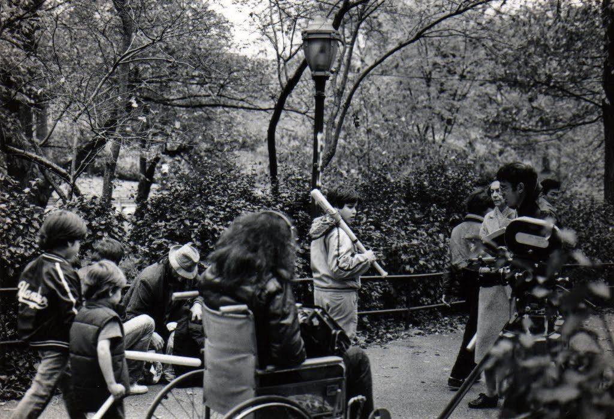
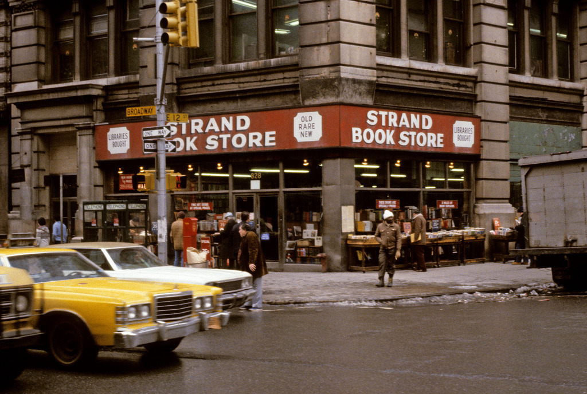
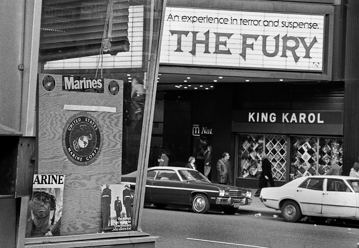
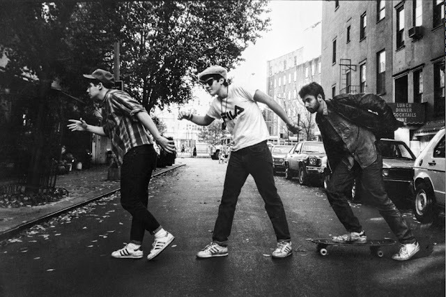
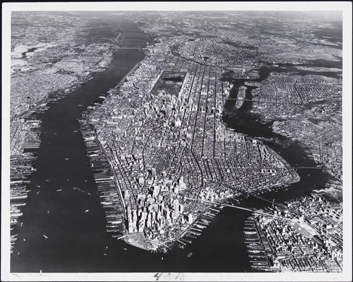

1980s Manhattan. Would you go here for your health and beauty needs?
1980s Manhattan. Would you go here for your health and beauty needs?
New York City, 1965.

Subway, 1981. Whachoo lookin’ at?

Midtown, 1982. Orange Julius, porn, and karate.
Between 1970 and 1981, the Bronx lost over 100,000 apartments.
By Lisa Kahane
Harold Feinstein: Coney Island Teenagers, 1949

Gang of marauding youths in Central Park, 1981.
It looks like they just came from Bat Day at Yankee Stadium. The bats were tiny, but dangerous, as those bystanders are about to find out…

The world’s craziest percussionist, on the streets of NYC, 1979. (He’s also, apparently, the world’s greatest boss, according to the button on the upper left.)

The Strand in 1979.

Times Square, 1978. That’s an actual record store on the right: King Karol. Those are LPs in the window.

Pinball in the snow. NYC 1978.

Astor Place, 1978.

Black Sabbath in concert at Madison Square Garden, 1977.

Bronx 1980s~

Rowboats in Central Park, 1967.


New York City, 1986
by Ricky Powell

Manhattan, 1953.